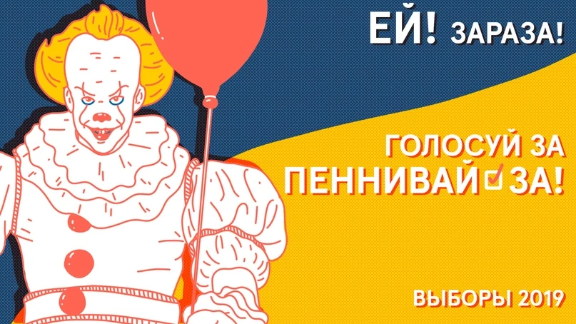
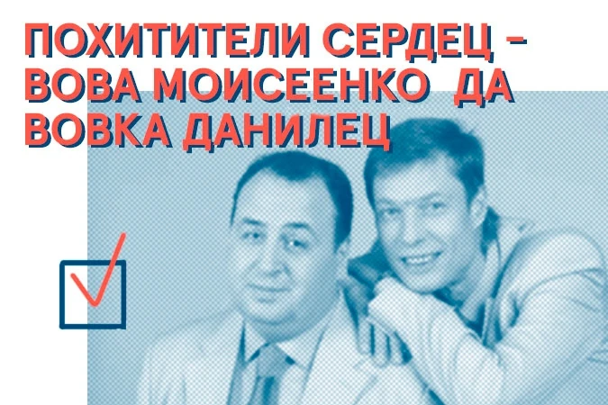
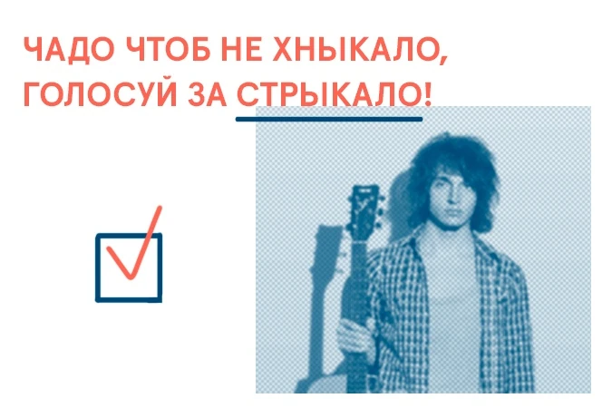
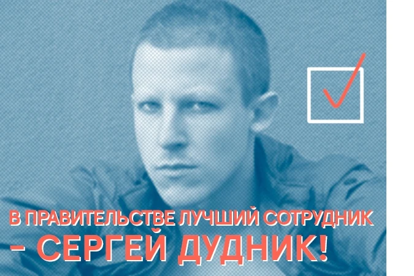

На выборах президента Украины лидирует комик Владимир Зеленский. Братский народ устал от агрессии, ему хочется шуток-прибауток, хочется мира и смеха. Данила Блюз считает, что Зеленский проторит юмористам и шоуменам путь в большую политику, и уже прикидывает, кто же тот клоун, который займет президентское кресло следующим.

Веселый все-таки народ хохлы, люблю их. Есть в них эта анархистская, махновская жилка, любят они треш и угар, любят чуть что устраивать майданы с кастрюлями на головах. Настоящая казацкая вольница! Запорожцы пишут письмо турецкому султану — почти 400 лет прошло и ничего не изменилось. Все такие же бодрые хохотуны населяют эти плодородные земли. “Чертовский народ!” — говорил автор бессмертного полотна Илья Репин. Вот и сейчас украинцы — какая ирония! — в День смеха массово проголосовали за комика Зеленского. Больше 30% набрал Владимир Александрович, вдвое больше, чем постылый конфетник Порошенко. Думаю, после успеха Зеленского в президенты пойдут баллотироваться клоуны всех мастей, благо богата ими земля украинская.
Владимир Моисеенко и Владимир Данилец
Этот дуэт выпускников Киевского училища эстрадно-циркового искусства — лучшее, что дала Украина миру юмора. Один, Моисеенко, — длинный, с монобровью и лошадиными зубами, все время рожи корчит такие, что описаешься от смеха! Второй, Данилец, — толстый, низенький, говорит настолько придурочным голосом — просто туши свет!
В 1987 году они придумали номер про кроликов и с тех пор горя не знают. Выступление сразу же стало классикой “Аншлага” и хранится в личной коллекции Регины Дубовицкой на золотой VHS-кассете. Суть сценки вы помните, она в крови у вас, впитана с молоком матери. У заводчика кроликов радиоведущий берет интервью. Заводчик тупой и все время смешно оговаривается, а радиоведущий нервный и все время орет. Рефреном через весь номер идет фраза: “Кролики — это не только ценный мех, но и три, четыре килограмма…”. И плевать, что сюжету уже 32 года, — он продолжает взрывать стадионы по всему бывшему СССР. Думаю, люди, придумавшие бессмертную шутку, смогут и страну поднять.
Одного берем в президенты, второго в премьеры. Через два срока меняем местами. Чтобы снова услышать ржачный диалог, в стране начнут поднимать кролиководство, а президент с премьером под шквал аплодисментов будут вещать с экранов: “Кролики — это не только ценный мех…”. Вот тогда заживет Украина!

Маски-шоу
Если смотреть заседание Рады под незабвенное “ту-тыри-тумба ту-тыри-тумба”, не будет никакой разницы между ним и очередной серией “Маски-шоу”. Что тут, что там — кавардак, драки, затрещины, оплеухи, беготня и “бла-бла-бла” вместо связной речи. Всю Раду можно заселить персонажами “Масок”, а президентом поставить Жору Делиева в красном смокинге и с рок-н-ролльными бакенбардами. Порядка бы не прибавилось, зато всем стало бы повеселее.
Олег Скрипка
Из солиста группы “Вопли Видоплясова” Олега Скрипки тоже получился бы хороший лидер страны. Если кто помнит, в прошлом году он не на шутку разошелся и заявил, что те, мол, кто не владеют украинской мовой, отличаются низким IQ, и им нужно поставить диагноз “дебилизм”. "Нужно их изолировать, потому что они социально опасны, нужно создать гетто для них", — заявил тогда Олег. Изумительной честности человек! Пока украинские власти усиленно маскируются под порядочных людей, этот не скрывает своих фашистских воззрений. Сперва гетто, ну а там и до концлагерей недалеко. Кремлю такой бравый парубок у руля не помешал бы.
Валентин Стрыкало
Лирический автор-исполнитель, в миру известный как Юрий Каплан, неплохо бы смотрелся в кресле украинского президента. С таким лидером украинцы наконец-то провели бы в Киеве долгожданный гей-парад. А то уже который год “Украина це Европа”, а геев на улицах продолжают бить по морде. Президент с сомнительной ориентацией и сомнительным репертуаром наладил бы в этом плане обстановку в стране. Только представьте, как весь майдан запевает “Все решено, мама — я гей!”.

Сергей Дудник
Также известный как Серонхелия — главный пидор всея интернета. Если со Стрыкало Украину ждет цивилизованный гей-парад раз в год, то Дудник организует ежедневные гей-факельные шествия! Гомосексуализм станет главной религией в стране. Кто не согласен — тех в тюрьму, где в качестве наказания виновных будут трахать в задницу до конца дней. Детей начнут принудительно гомосексуализировать в школах, всех мужчин сложат в одну большую кучу на Крещатике и заставят сношаться. Ходить украинцы станут исключительно в чулках и на шпильках, Донбасс обменяют на полувековой запас лубриканта, презервативов и коктейля “Космополитен”. Гимном страны сделают Army Of Lovers — Sexual Revolution.

Верка Сердючка
Мой фаворит! Вот кто помирит две враждующие стороны! Верку любят все! В России ее любят, невзирая на то что она хохлушка и переодетый в сисястую бабу мужик. На Украине ее любят, несмотря на то что она переодетый в сисястую бабу мужик и выступает с концертами в РФ.
Гомофобия и национализм покидают сердца людей, стоит только им замахнуть стопарик и услышать первые аккорды веркиных хитов. Сколько под эти аккорды водки выпили две враждующие державы, сколько каблуков переломали на корпоративах, сколько морд побили и расцеловали! Ничто так не сближает людей, как пьяный дебош, а с Сердючкой у власти народ не выходил бы из запоя. Всюду воцарился бы мир. На майдане — пьянка, на Красной площади — тоже пьянка, в Париже под Эйфелевой башней все вповалку бухущие, в Вашингтоне у монумента честные граждане не просыхают, в ООН дипломаты за круглым столом чокаются и заздравные тосты произносят. На всех каналах пропагандисты лыка не вяжут, отплясывают гопак. И хохол обнимется с москалем, и еврей побратается с арабом, и лев возляжет рядом с агнцем.